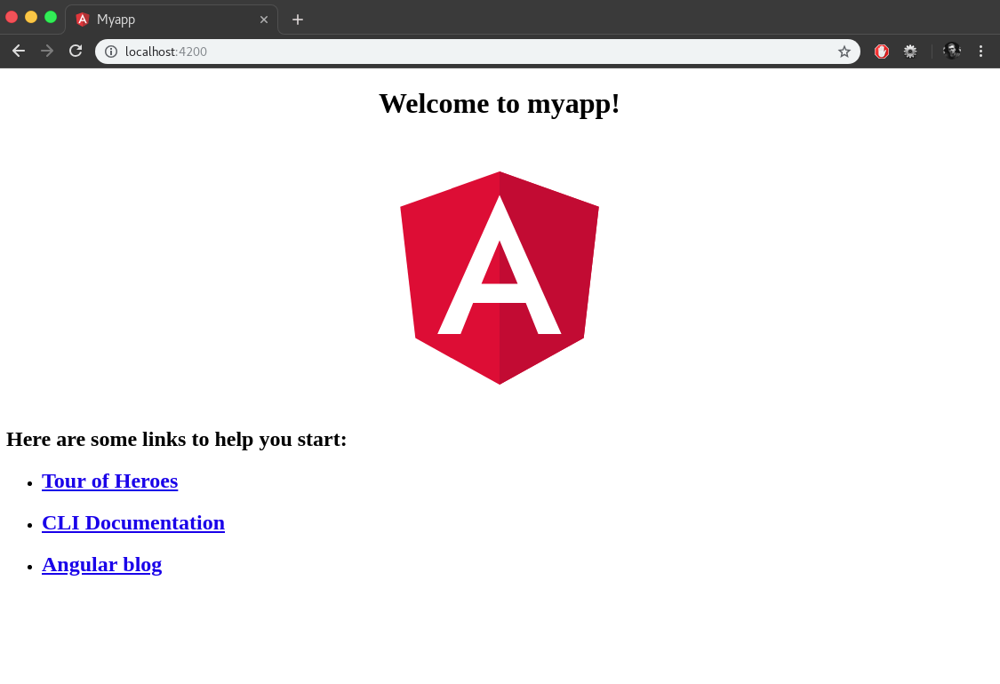

"Na natureza nada se cria, nada se perde, tudo se transforma."
- Antoine Lavoisier"As an asynchronous event driven JavaScript runtime, Node is designed to build scalable network applications."
- Nodejs.orgInstalação
$ npm install -g @angular/cli
Criar ambiente
$ ng new myapp
Iniciar o servidor
$ cd app
$ ng serve
Parabéns! :)
 Sua primeira aplicação Angular já está rodando!